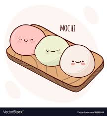

HOME
Mochi

Description
Mochi is a traditional Japanese rice cake made from glutinous rice flour, known for its chewy texture and subtle sweetness. It's often filled with sweet red bean paste or enjoyed plain.
This simple recipe guides you through making soft, delicious mochi at home.
Ingredients
- 1 cup glutinous rice flour (mochiko)
- 1/4 cup sugar
- 3/4 cup water
- Cornstarch or potato starch for dusting
- Optional: sweet red bean paste for filling
Steps
- Mix the glutinous rice flour and sugar in a microwave-safe bowl.
- Add water gradually while stirring until smooth.
- Cover the bowl loosely and microwave on high for 1 minute.
- Stir the mixture, then microwave again for another 1 minute.
- Stir once more and microwave for a final 30 seconds until the dough becomes sticky and translucent.
- Dust a clean surface with cornstarch and transfer the mochi dough onto it.
- Let it cool slightly, then dust your hands with starch and shape the mochi into small balls.
- Optionally, flatten each ball and fill with sweet red bean paste, then pinch closed.
- Enjoy your homemade mochi fresh!
Home